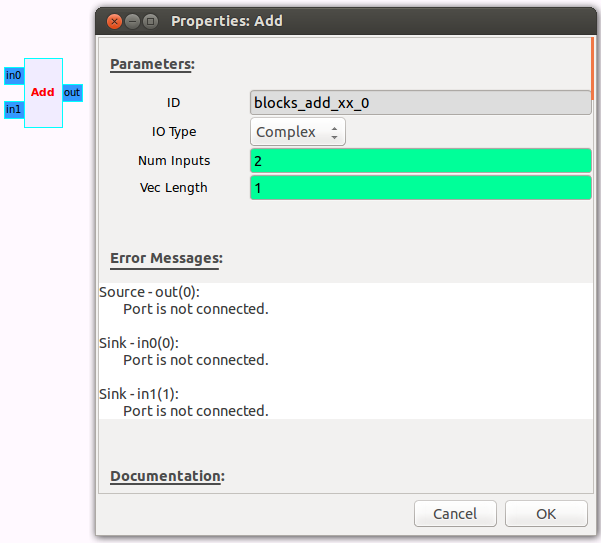

Implementa a função out(saída) = in0 + in1 + … + in(N-1).
I/O Type
Especifica o tipo de entradas e saída de dados.
Complexos: entradas e saídas são valores complexos. Float: entradas e saídas são valores de ponto flutuante(reais). Int: entradas e saídas são valores inteiros. Short: entradas e saídas são valores inteiros curtos.
Num Inputs
Tipo: int
Especifica o número de entradas. Sendo essas entradas marcadas por in0 até in(N-1)
Vec Length
Especifica o comprimento do vetor para poder haver o processamento do vetor. Geralmente as aplicações vão usar o valor padrão 1.